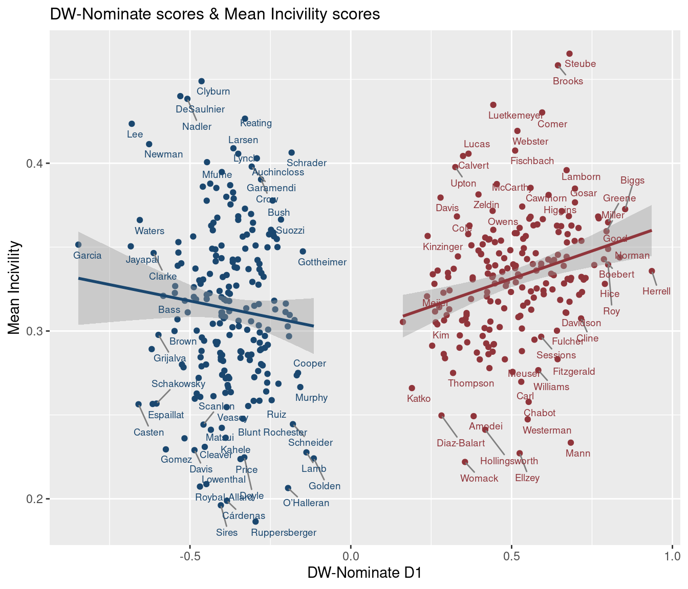

setwd(locald)
library(quanteda)
library(glmnet)
source("incivility-sage-open-master/functions.R")
load("incivility-sage-open-master/data/lasso-classifier.rdata")
load("incivility-sage-open-master/data/dfm-file.rdata")Per Theocharis et al. (2020). A look at the prevalence of incivility towards US lawmakers on Twitter using supervised machine learning methods.
1 Classifier
The authors make their incivility classifier available here.
2 House members: details & ideology scores
The unitedstates project provides demographic info and social details for members of congress.
library(dplyr)
leg_dets <- 'https://theunitedstates.io/congress-legislators/legislators-current.csv'
reps <- read.csv((url(leg_dets)), stringsAsFactors = FALSE) |>
dplyr::filter(type == 'rep')The package Rvoteview provides access to the Voteview database and DW-Nominate ideology scores for US lawmakers.
house_members <- Rvoteview::download_metadata(type = 'members',
chamber = 'house',
congress = '117') [1] "/tmp/RtmpkOxcl9/H117_members.csv"3 Twitter data
3.1 Collect tweets
We use the rtweet package to gather the most recent tweets mentioning each member of the US House of Representatives. Here, “mention” is in the Twitter sense, ie, a username prefixed with the @ symbol.
tweet_set <- lapply(paste0('@', reps$twitter),
function(x) {
ts <- rtweet::search_tweets(
q = x,
## n = 200,
type = "recent",
include_rts = FALSE,
geocode = NULL,
max_id = NULL,
parse = TRUE,
token = tk,
retryonratelimit = TRUE)
if(nrow(ts) == 0) {return(NA)} else{
ts |> dplyr::select(1:5)
}
}
)names(tweet_set) <- reps$bioguide_id
tweet_set0 <- Filter(length, tweet_set)
tweet_set1 <- Filter(function(a) any(!is.na(a)), tweet_set0)
tweet_set2 <- tweet_set1 |> data.table::rbindlist(idcol = 'bioguide_id') 3.2 Classify civility
tweet_set2$incivil <- predict_incivility(tweet_set2$text,
old_dfm = dfm,
classifier = lasso)3.3 Filter tweets
Subset tweet corpus to only those that mention a single US lawmaker.
tweet_set3 <- tweet_set2 |>
mutate(ats = stringr::str_count(text, pattern = '\\@')) |>
filter(ats == 1)Theocharis et al. (2020) ’s classifier computes the probability that given tweet is uncivil. One approach is to treat that probability as an incivility score; another is to convert the probability into a categorical variable, +/- uncivil. Here, we implement the former.
tsum <- tweet_set3 |>
mutate(is_uncivil = ifelse(incivil > 0.5, 1, 0)) |>
group_by(bioguide_id) |>
summarise(mean_score = mean(incivil),
mentions = n(),
uncivil_mentions = sum(is_uncivil)) |>
dplyr::ungroup() |>
mutate(per_uncivil = round(uncivil_mentions/mentions*100, 1)) |>
merge(reps)3.4 Sample tweets
set.seed(99)
tweet_set3 |>
inner_join(reps) |>
filter(incivil > .75) |>
sample_n(5) %>%
select(full_name, state, party, text) |>
DT::datatable(rownames = F)4 Incivility & ideology
Per plot below, then, tweeters tend to be less civil when mentioning (or addressing) more ideologically extreme members of Congress in their tweets.
library(ggplot2)
tsum |>
merge(house_members) |>
filter(mean_score < 0.5) |>
ggplot(aes(nominate_dim1,
mean_score, #per_uncivil,
color = as.factor(party),
label = last_name))+
geom_point()+ #
geom_smooth(method="lm", se=T) +
ggrepel::geom_text_repel(
nudge_y = -0.0025,
segment.color = "grey50",
direction = "y",
hjust = 0,
size = 2.5 ) +
ggthemes::scale_color_stata() +
theme(legend.position = "none",
plot.title = element_text(size=12),
axis.title = element_text())+
xlab('DW-Nominate D1') + ylab('Mean Incivility') +
labs(title="DW-Nominate scores & Mean Incivility scores") 
References
Theocharis, Yannis, Pablo Barberá, Zoltán Fazekas, and Sebastian Adrian Popa. 2020. “The Dynamics of Political Incivility on Twitter.” Sage Open 10 (2): 2158244020919447.